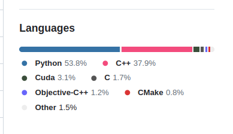

# calculate the intersection of two vectors/sets
[1, 2] ∩ [2, 3, 4]1-element Vector{Int64}:
2In a world ruled by Python (and, in some areas, R), why use an exquisite and new language like Julia in this workshop? You can find some good reasons in the book Julia Data Science, but I will give some in the context of topology:
Julia is fast. You won’t need to use another language to make some expensive computation.
Let’s say you read about a new algorithm to calculate the Vietoris-Rips. If you are a R/Python user, your algorithm won’t be written in R/Python simply because R/Python is slow. Fast code in R/Python is written in C, C++, Fortran or Rust; this is called the two language problem. Julia solves this because with enought knowledge about the compiler and the language, you will get performance nearly as good as if it was written in C. Optimize Julia code is not a trivial task, but is way easier than learning another language just to get good performance in some functions.

torch in Python has its core written mostly in C++. Python is just a “glue” interface.Flux.jl is 100% written in Julia.It is easy to use another language inside Julia.
Even though Julia is fast and has a robust ecosystem, Python and R have many more packages already good-to-go. You can use them easily with tools like PythonCall or RCall.
Julia looks like mathematics and has an elegant syntax.
Being able to mix LaTeX symbols with code can make the code way more readable.
You can find many nice examples on BeautifulAlgorithms.jl. Below are some common Julia code:
# calculate the intersection of two vectors/sets
[1, 2] ∩ [2, 3, 4]1-element Vector{Int64}:
2# check if a value is in a vector/set
1 ∉ [2, 3]true# define a function in one line
f(r) = π*r^2
f(3)28.274333882308138# Euler's identity
ℯ^(im * π) + 1 |> round0.0 + 0.0im# calculating the pairwise-distance between points in a set
X = [1, 2, 3, 4]
d(x, y) = abs(x - y)
[d(xᵢ, xⱼ) for xᵢ ∈ X, xⱼ ∈ X]4×4 Matrix{Int64}:
0 1 2 3
1 0 1 2
2 1 0 1
3 2 1 0Easily apply a function to all elements of a vector/set:
x = [1, 2, 3, 4]
# broadcast
sin.(x)4-element Vector{Float64}:
0.8414709848078965
0.9092974268256817
0.1411200080598672
-0.7568024953079282# mapping
map(sin, x)4-element Vector{Float64}:
0.8414709848078965
0.9092974268256817
0.1411200080598672
-0.7568024953079282# list comprehension
[sin(x_i) for x_i ∈ x]4-element Vector{Float64}:
0.8414709848078965
0.9092974268256817
0.1411200080598672
-0.7568024953079282You can compose functions in the reading order. Instead of writing:
sin(cos(1))0.5143952585235492you can “pipe” the functions as in:
1 |> cos |> sin0.5143952585235492Julia is a functional programming language with type hierarchy, which means that we have “categories” (ie. types) and “functors” (ie. functions) mapping between the types; moreover, its polimorphism means that the functions depend on the type of its arguments.
For example, suppose you want to define the norm of a vector:
x = [1, 2, 3]
# define the norm of a Vector of Numbers
norm(x::Vector{<:Number}) = x.^2 |> sum |> sqrt
norm(x)3.7416573867739413You can also define the norm of a function \(f\) as the approximate integral of \(|f|\) on the interval \([0, 1]\):
# norm on [0, 1]
norm(f::Function; step_size = 0.0001) =
[f(x) * step_size for x ∈ 0:step_size:1] .|>
abs |> sum
square = x -> x^2
norm(square)0.33338333500000006which is very close to the real definite integral.
PS: plotting is also as easy as:
using Plots;
plot(square, 0:0.1:1)Why not define the norm of a text as the amount of characters?
norm(s::AbstractString) = length(s)
norm("Hello!")6Topological Data Analysis is a very curious field of mathematics that apply tools from topology and algebraic topology in the study of datasets. By “datasets”, we almost always mean “finite metric space”.
These tools can be divided in some broad categories:
Persistence homology calculates the “shape” (homology groups) of a object on different scales, and compact this information into objects called “barcodes”. This barcode can be vectorized and then inserted into machine learning models.
The Mapper algorithm is the discrete version of the Reeb graph. It captures the geometry of a dataset with respect to a given function (called “filter”) and produce a graph of its pre-images clustered. There is also the Ball Mapper variant, which does not need a filter function and resembles the Vietoris-Rips filtration. These methods are useful to get a glimpse of the geometry (flares, holes) and areas of interest. For example: if your metric space is a dataset of measurements of patients with diabets, the Mapper graph can represent the patients and the shape of this graph can give insights about the type of diabetes one has.
Algorithms like ToMATo are clustering algorithms: we have a metric space as input, and return a partition of this dataset. Clustering is useful whenever we need to “group a set of objects in such a way that objects in the same group (called a cluster) are more similar to each other than to those in other groups (clusters)”1.
This minicourse is a good opportunity for pure topologists to see how we can use TDA in practice. It will be even better for the applied mathematicians who can promptly recognize the tools and algorithms I am using.
https://en.wikipedia.org/wiki/Cluster_analysis↩︎